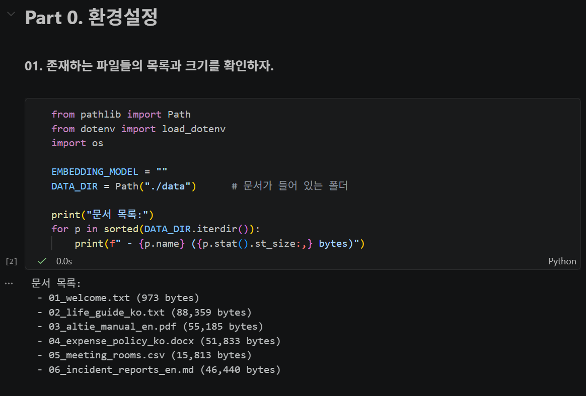
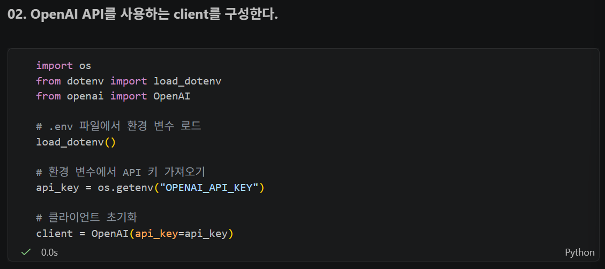
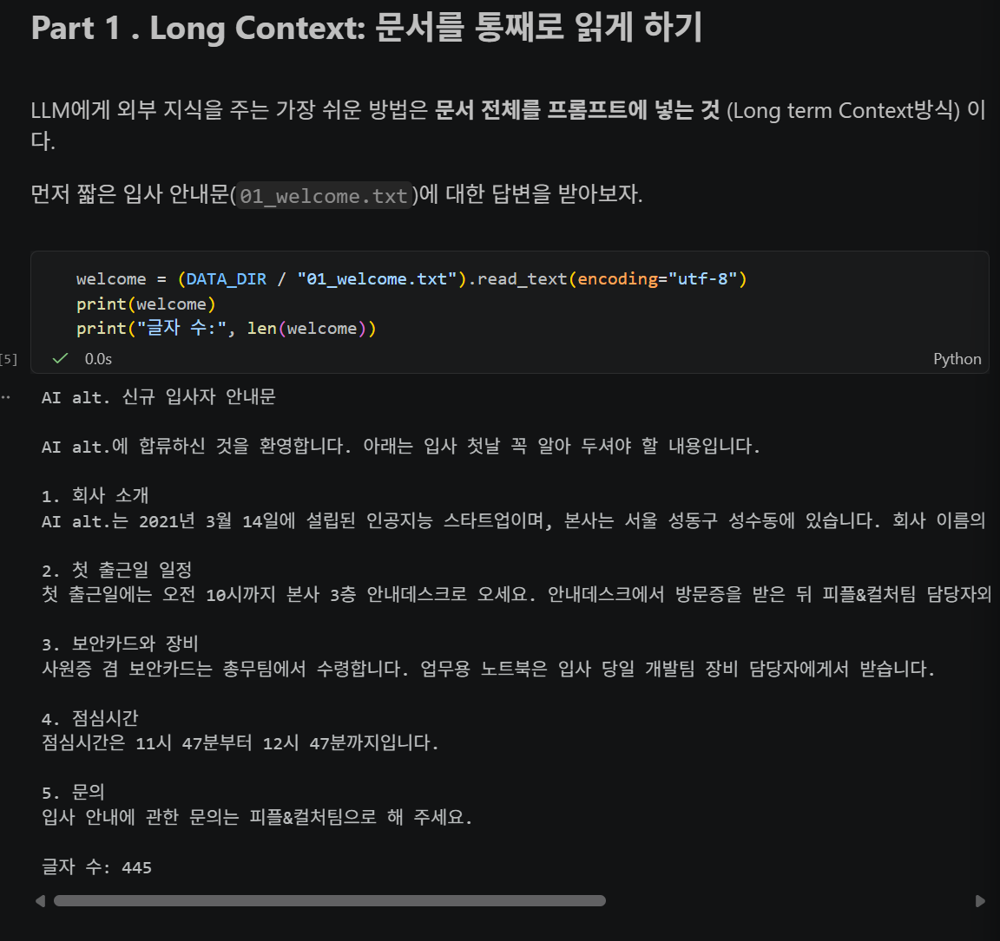
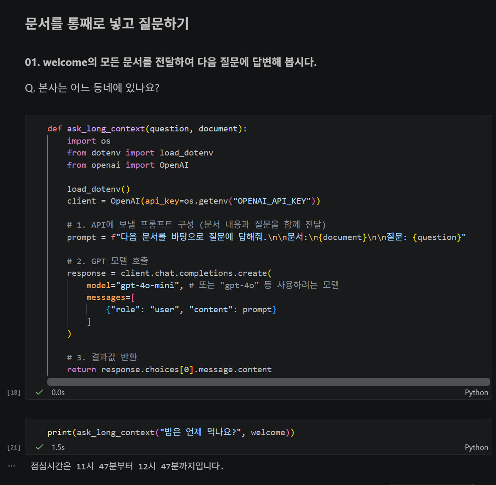

📖 1. RAG 개념
A. LLM과 외부 지식의 한계 🧠
- Knowledge Cutoff (지식 마감일): LLM 모델 자체는 사전에 학습된 데이터까지만 알고 있기 때문에 최신 뉴스나 날씨에 대답할 수 없습니다.
- 사내 데이터 접근 불가: 보안이 걸린 우리 회사만의 고유한 정보나 일반적이지 않은 비밀 데이터는 웹 검색으로도 알 수 없습니다.
- Long-context Prompting의 한계: 문서를 검색 과정 없이 통째로 프롬프트에 넣어 LLM에 전달하는 방법이 있습니다. 하지만 이 방식은 문서를 통째로 넣기 때문에 토큰(비용) 낭비가 심하고, 모델이 한 번에 처리할 수 있는
Context Window용량을 초과하면 호출 자체가 불가능해진다는 치명적인 단점이 있습니다.
B. RAG Workflow (검색 증강 생성) 🔄
긴 문서를 통째로 넣는 대신, 사용자의 질문과 관련된 부분(조각)만 검색해서 LLM에게 넘겨주는 방식입니다. 짧고 핵심적인 Context만 전달하여 효율을 높입니다.
Step 1: Indexing (문서를 검색 가능하게 준비하는 과정)
- Document Loading: 참고할 원본 문서(PDF, Word 등)를 불러옵니다.
- Chunking: 긴 문서를 검색하기 좋은 작은 텍스트 조각(
Chunk)으로 자릅니다. 문맥이 끊기지 않도록 앞뒤 내용을 살짝 겹치게 자르는 것을Overlap이라고 합니다. - Embedding: 텍스트 조각들을 AI가 이해하고 계산할 수 있는 숫자 배열인
Vector(벡터)로 변환합니다. 의미가 비슷할수록 벡터 공간에서 서로 가까운 위치에 배치됩니다. - Vector Store: 변환된 벡터와 원본 텍스트를 저장하는 데이터베이스입니다. 로컬 환경에서 가볍고 파이썬으로 다루기 쉬운
ChromaDB가 대표적입니다.
Step 2: Retrieval (검색 및 답변 생성 과정)
- 사용자가 질문하면, 질문 역시 벡터로 변환한 뒤 Vector Store에서 가장 의미가 비슷한 문서 조각(
Chunk)을 검색해서 가져옵니다. - 가져온 내용만 바탕으로 LLM이 최종 답변을 생성합니다.
C. Data Loader & Text Splitter 🛠️
- Document Loader: .txt, .pdf, .docx, .csv 등 형식이 제각각인 파일들에서 텍스트와 메타데이터(페이지 번호 등 부가 정보)를 뽑아내어 일관된
Document객체 형태로 만들어주는 도구입니다. - LangChain Community: 다양한 로더들을 직접 구현할 필요 없이 통일된 파이썬 문법으로 쉽게 사용할 수 있도록 도와주는 SDK 모음입니다.
TextLoader,PyPDFLoader,CSVLoader등을 제공합니다. - Text Splitter: 로더가 읽어온 문서를 쪼개는 도구입니다. 대표적으로
RecursiveCharacterTextSplitter는 문단(엔터 두 번) ➔ 줄바꿈 ➔ 문장 끝 ➔ 공백 순서로 우선순위를 두어, 최대한 문맥이 깨지지 않게 영리하게 텍스트를 분할합니다.
D. 고급 RAG 기술 (Improving Retrieval) 🚀
기본적인 벡터 검색은 '의미' 기반이라 뉘앙스를 파악하는 데는 좋지만, 정확한 키워드나 부품 번호, 고유 명사 매칭에는 취약합니다.
- BM25 검색 알고리즘: 단어가 문서에 얼마나 자주 등장하는지(
TF), 그 단어가 전체 문서들 사이에서 얼마나 희귀한 핵심어인지(IDF), 그리고 문서의 길이까지 모두 계산하여 키워드가 정확히 일치하는 문서를 찾는 전통적이고 강력한 검색 방식입니다. - Tokenizing (토큰화): BM25 검색 등을 위해 문장을 가장 작은 덩어리(토큰)로 쪼개는 작업입니다.
- OpenAI 모델들은 자체 공식 라이브러리인
tiktoken을 사용합니다. - 한국어는 조사와 어미가 다양해(예: 먹었어요, 먹었다) 처리가 까다로우므로,
kiwipiepy같은 형태소 분석기를 사용하여 명사나 동사 위주로 토큰을 추출하면 검색 품질이 훨씬 좋아집니다.
- OpenAI 모델들은 자체 공식 라이브러리인
- Hybrid Search (하이브리드 검색): 의미 기반의
Vector Search와 정확한 키워드 기반의BM25 검색을 동시에 진행한 뒤, 두 결과를 병합하여 상호 단점을 보완하는 최고 성능의 검색 기법입니다.
2. 실습
A. 환경설정

B. OpenAI API Client 구성

C. Long term Context 방식

D. 문서를 전달 후 질문에 답변
